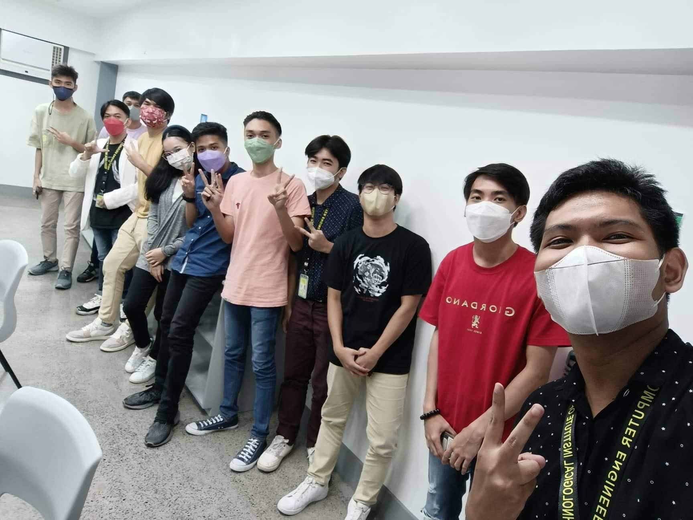

FINAL PROJECT
REFLECTION AND LEARNING
Taking CPE 232-CPE31S24 - Managing Enterprise Servers were very fun and interesting.
I have learned a lot of things during the onsite class, like how to properly install the CentOS.
The most memorable was that, I learned how to implement ssh and creating a playbook was one of the most favorite topics I've learned during the onsite class.
To be honest, there are a lot of ways to manage your files, like creating roles to easily find the error or the misspelled words in the code.
I encountered a lot of problem and error during activity, but somehow I managed to fix it.
Thanks to Dr. Jonathan Taylar for teaching us a wonderful course, I will never forget what he taught us, and I really enjoyed his lecture.
MEMORIES
